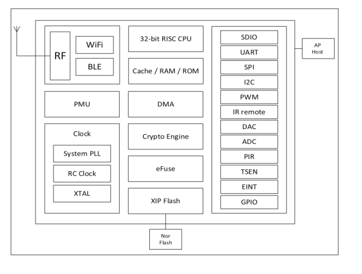

XR-50A
淘宝链接：https://shop379208868.taobao.com
简介
XR-50A WiFi 模组主要是为了满足图像采集、语音播放和识别以及无线传输应用而开发的一款专用型的产品，该模组核心处理器 XR872 在较小尺寸封装中集成了运行频率高达 384MHz 的 ARMCortex-M4F MCU；集成高性能 WLAN 系统，包含 Wi-Fi MAC/ BB/RF/PA/LNA 单元；集成高采样率和极低噪声的音频子系统；集成高分辨率图像采集子系统，支持硬件 JPEG 图像编码；集成先进的电源管理单元，支持超低功耗，具有多种睡眠模式和快速唤醒机制；集成硬件加密引擎，支持AES/DES/3DES/SHA/MD5/CRC 等多种加密方式； 集成丰富的外设接口，如 I2S，SDIO，CSI，UART 等。 XR-50A WiFi 模组支持标准的 IEEE802.11 b/g/n 协议，支持 RTOS，支持完整的 TCP/IP协议栈。用户也可以使用该模组为现有的设备添加联网功能，也可以构建独立的网络控制器。在搭载应用并作为设备中唯一的应用处理器时，能够直接从外接闪存中启动。内置的高速缓冲存储器有利于提高系统性能，并减少内存需求。
